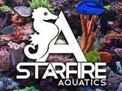
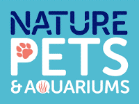
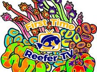
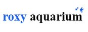
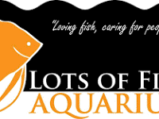
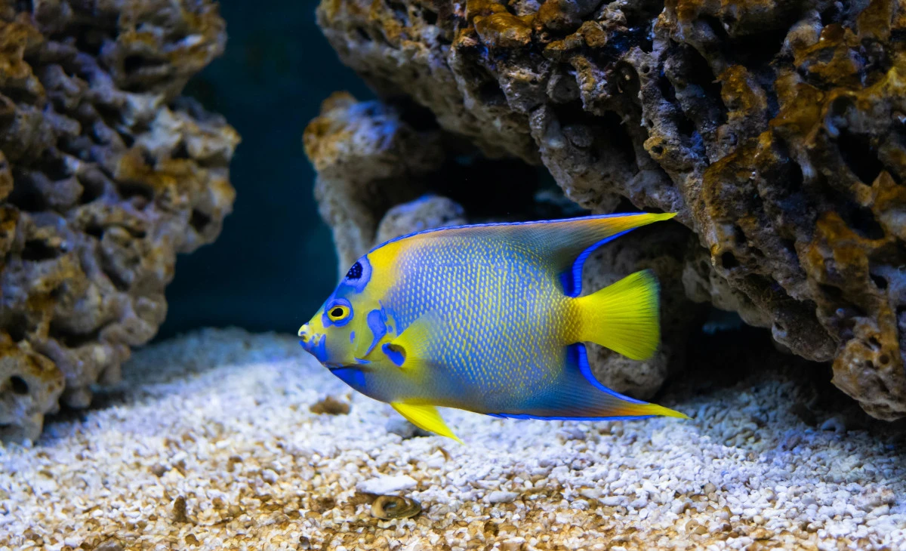

Pristine Ocean Water
Delivered to Your Door.
Premium 1-micron filtered saltwater sourced directly from the Bass Strait for Melbourne's finest marine aquariums.
ClearSeas Aquatic Services is dedicated to providing the best natural saltwater supply to our partners





Saltwater Delivery Melbourne
Clear Seas Aquatic Services is dedicated to providing the best natural saltwater supply for aquariums in Melbourne. We meticulously collect all our water from the pristine San Remo area, timing our collections with the incoming tide to ensure the water is fresh from Bass Strait.
The tidal nature of this location ensures the water is naturally flushed twice a day, guaranteeing a high level of purity. We operate all week, from early morning until late at night, following the tides to ensure a consistent supply. Our water is filtered down to 1 micron, and we conduct regular Triton ICP testing to guarantee the quality of every delivery.
For those seeking the best natural saltwater for marine tanks in Melbourne, we stand behind our methods with a guarantee you’ll be completely satisfied.
Trust Clear Seas Aquatic Services for reliable, eco-friendly aquarium water solutions in Melbourne.

Aquatic Service Request
Melbourne Metro & Regional Victoria